MyBox用户手册 - 综述 v6.6.2
MyBox：简易工具箱
用户手册 - 综述
作者：Mara
版本：6.6.2
日期：2022-11-30
内容目录
1 简介 3
1.1 新内容 4
1.2 跨平台 4
1.3 个人的 4
1.4 数据兼容 4
1.5 国际化 4
2 资源地址 6
3 文档 7
4 下载与运行 8
4.1 源码 8
4.2 自包含程序包 8
4.3 Jar包 8
4.4 其它下载地址 8
4.5 限制 9
4.6 版本迁移 9
4.7 配置 9
5 实现基础 10
6 界面通用功能 13
6.1 主界面 13
6.2 界面的布局 14
6.3 设置界面字体大小 14
6.4 打开新界面 15
6.5 维持界面尺寸 15
6.6 最近访问的文件/目录 15
6.7 数据表 16
6.8 右键菜单 17
6.9 “示例”窗口 18
6.10 “历史”窗口 19
6.11 颜色块与调色板 19
7 设置 20
7.1 界面 21
7.2 基础 22
7.3 数据 22
7.4 PDF工具 23
7.5 图像 23
7.6 地图 24
8 窗口 25
9 MyBox快捷键 26
这是利用JavaFx开发的图形化桌面应用，目标是提供简单易用的功能。免费开源。
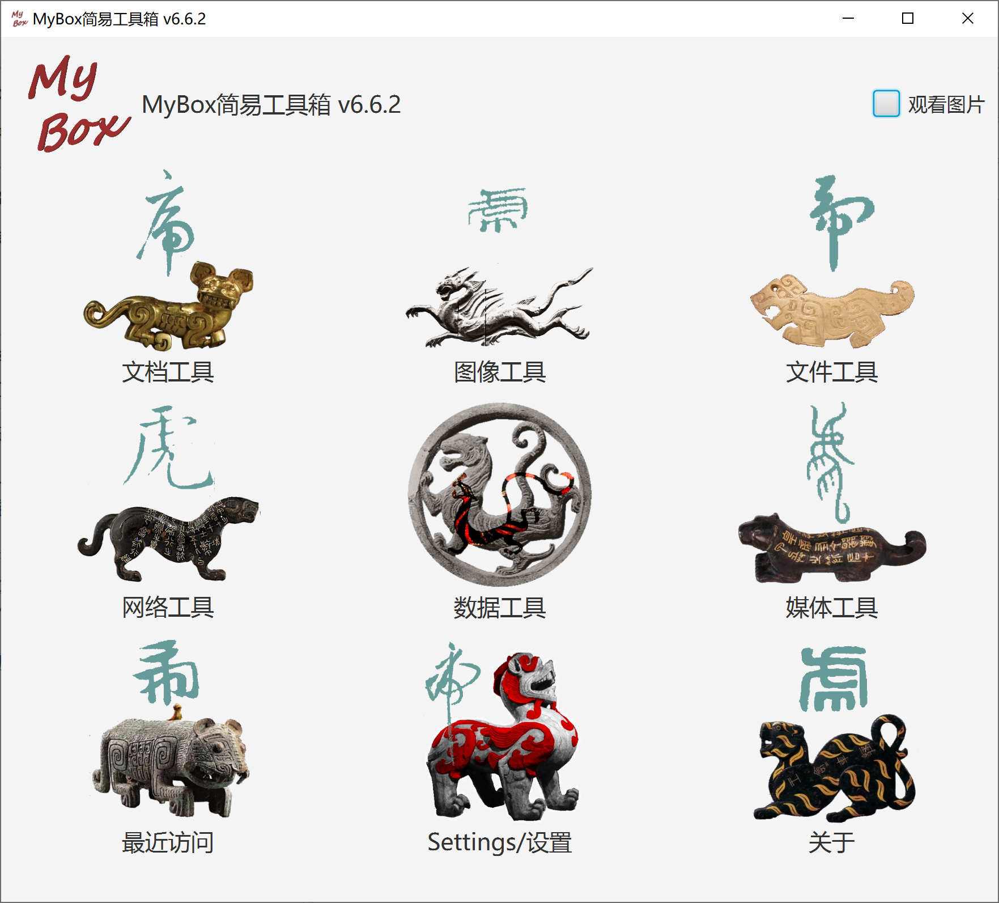
2022-11-30 版本6.6.2
增强：
值区间分组：
对于时间/世纪类型，将值解析为毫秒数。
按分割尺寸时，对于时间/世纪类型，可设置时间单位。
在表格中增删改“开始-结束”列表项。
对于“开始-结束”区间，可设置区间是否包含“开始”/“结束”。
整理/计算数据的结果可以直接输出为json/xml/html/pdf。
数据示例：我的数据。可以用数据表记录个人数据，如日记、通讯录、资金流、个人财产、体重等。
改进：
写入临时数据库表时统一用字符型，以免类型转换造成数据丢失。
每个语言只对应一个资源文件。
解决：语言的修改未能保存。
MyBox用纯Java实现且只基于开放资源，MyBox可运行于支持Java
18的平台。
MyBox
v5.3以前的版本均基于Java
8。
导入的数据是通用的文本格式，如txt/csv。
至少有一种导出格式可以被导入。
导入的数据是自包含的，即重建原数据无需辅助数据。
每种语言对应一个资源文件：“Messages_语言名.properties”。
支持在线添加语言。提供表格，对照英语翻译。新语言可实时生效。
例如，新语言名字为“aa”，则它的资源文件是：Messages_aa.properties。
新语言可共享给别人：把资源文件复制到数据目录的子目录"mybox_languages"下，则MyBox可即时感知到新语言。
内置中文和英文，
在目录MyBox/src/main/resources/bundles/中：
|
语言 |
界面的资源文件 |
|---|---|
|
中文 |
Messages_zh_CN.properties |
|
英文 |
Messages_en.properties |
|
内容 |
链接 |
|---|---|
|
项目主页 |
|
|
源代码和编译好的包 |
|
|
提交软件需求和问题报告 |
|
|
数据 |
|
|
文档 |
|
|
镜像 |
|
|
云盘 |
https://pan.baidu.com/s/1fWMRzym_jh075OCX0D8y8A#list/path=%2F |
|
文档名 |
版本 |
修改时间 |
英文 |
中文 |
|---|---|---|---|---|
|
开发日志 |
6.6.2 |
2022-11-30 |
||
|
快捷键 |
6.5.6 |
2022-6-11 |
||
|
功能列表 |
6.6.2 |
2022-11-30 |
||
|
打包步骤 |
6.3.3 |
2020-9-27 |
||
|
开发指南 |
2.1 |
2020-8-27 |
||
|
用户手册-综述 |
6.6.2 |
2022-11-30 |
||
|
用户手册-数据工具 |
6.6.2 |
2022-11-30 |
||
|
用户手册-文档工具 |
6.6 |
2022-9-28 |
||
|
用户手册-图像工具 |
6.6 |
2022-9-28 |
||
|
用户手册-文件工具 |
6.6 |
2022-9-28 |
||
|
用户手册-网络工具 |
6.6 |
2022-9-28 |
||
|
用户手册-媒体工具 |
6.6 |
2022-9-28 |
||
|
用户手册-开发工具 |
6.6.2 |
2022-11-30 |
||
|
示例-笔记 |
6.6.1 |
2022-11-16 |
||
|
示例-树形 |
6.6.1 |
2022-11-16 |
||
|
示例-收藏的网址 |
6.6.1 |
2022-11-16 |
||
|
示例-SQL |
6.6.1 |
2022-11-16 |
||
|
示例-JShell |
6.6.1 |
2022-11-16 |
||
|
示例-JEXL |
6.6.1 |
2022-11-16 |
||
|
示例-JavaScript |
6.6.1 |
2022-11-16 |
||
|
示例-数学函数 |
6.6.1 |
2022-11-16 |
||
|
示例-行过滤 |
6.6.1 |
2022-11-16 |
||
|
关于-颜色 |
6.6.1 |
2022-11-16 |
||
|
关于-坐标系统 |
6.6.1 |
2022-11-16 |
||
|
关于-媒体 |
6.6.1 |
2022-11-16 |
||
|
关于-数据分析 |
6.6.1 |
2022-11-16 |
||
|
调色盘-常用网页颜色 |
6.6.1 |
2022-11-16 |
||
|
调色盘-中国传统颜色 |
6.6.1 |
2022-11-16 |
||
|
调色盘-日本传统颜色 |
6.6.1 |
2022-11-16 |
||
|
调色盘-来自colorhexa.com颜色 |
6.6.1 |
2022-11-16 |
||
|
调色盘-MyBox的颜色 |
6.6.1 |
2022-11-16 |
每个版本编译好的包已发布在Releases目录下（点击此项目主页的releases页签）。
MyBox-6.6.2-src.zip 55M-
自包含的程序包无需java环境、无需安装、解包可用。
|
平台 |
链接 |
大小 |
启动文件 |
|---|---|---|---|
|
win10 x64 |
260MB- |
MyBox.exe |
|
|
CentOS 7 x64 |
280MB- |
bin/MyBox |
|
|
mac x64 |
280MB- |
MyBox-6.6.2.app |
双击或者用命令行执行包内的启动文件即可运行程序。可以把图片/文本/PDF文件的打开方式关联到MyBox，这样双击文件名就直接是用MyBox打开了。
在已安装JRE或者JDK Oracle jdk或open jdk均可）的环境下，可以下载jar包。
|
平台 |
链接 |
大小 |
运行需要 |
|---|---|---|---|
|
win |
190MB- |
Java 18或更高版本 |
|
|
linux |
200MB- |
Java 18或更高版本 |
|
|
mac |
200MB- |
Java 18或更高版本 |
执行以下命令来启动程序：
java -jar MyBox-6.6.2.jar
程序可以跟一个文件名作为参数、以用MyBox直接打开此文件。例如以下命令是打开此图片：
java -jar MyBox-6.6.2.jar /tmp/a1.jpg
从云盘下载：
https://pan.baidu.com/s/1fWMRzym_jh075OCX0D8y8A#list/path=%2F
从sourceforge下载：https://sourceforge.net/projects/mara-mybox/files/
MyBox未经足够测试，可靠性低，有的版本甚至可能出现毁坏数据的错误。
MyBox持续新增功能同时改进代码，稳定性差，时而发生非预期的功能失效。
在某个输入法运行时，MyBox的窗口经常僵住。解决办法：禁用/卸载此输入法。
每个版本有自己的配置文件，新版本可以复制已安装版本的参数。
每个版本处理的所有数据都在它指向的“数据目录”下。多个版本可以指向同一数据目录。
MyBox向后兼容：新版本可以处理旧版本的数据目录。而不保证向前兼容：旧版本处理新版本的数据目录时可能出错。
|
平台 |
MyBox配置文件的目录 |
|---|---|
|
win |
|
|
linux |
|
|
mac |
|
可以临时改变配置文件：在命令行启动jar包时设置参数"config="配置文件名""。
利用“设置”功能也可以修改配置参数。
MyBox基于以下开放资源：
|
名字 |
角色 |
链接 |
|---|---|---|
|
JDK |
Java语言 |
|
|
https://www.oracle.com/technetwork/java/javase/downloads/index.html |
||
|
https://docs.oracle.com/en/java/javase/18/docs/api/index.html |
||
|
JavaFx |
图形化界面 |
|
|
NetBeans |
集成开发环境 |
|
|
jpackage |
自包含包 |
https://docs.oracle.com/en/java/javase/18/docs/specs/man/jpackage.html |
|
maven |
代码构建 |
|
|
jai-imageio |
图像处理 |
|
|
PDFBox |
PDF处理 |
|
|
PDF2DOM |
PDF转html |
|
|
javazoom |
MP3解码 |
|
|
Derby |
数据库 |
|
|
GifDecoder |
不规范Gif |
|
|
EncodingDetect |
文本编码 |
|
|
Free Icons |
图标 |
|
|
Lindbloom |
色彩理论 |
|
|
tess4j |
OCR |
|
|
tesseract |
OCR |
|
|
barcode4j |
生成条码 |
|
|
zxing |
生成/解码条码 |
|
|
flexmark-java |
转换Markdown |
|
|
commons-compress |
归档/压缩 |
|
|
XZ for Java |
归档/压缩 |
|
|
jaffree |
封装ffmpeg |
|
|
ffmpeg |
媒体转换/生成 |
|
|
image4j |
ico格式 |
|
|
AutoCommitCell |
提交修改 |
|
|
高德 |
地图 |
|
|
高德 |
坐标 |
|
|
微博 |
图片素材 |
https://weibo.com/3876734080/InmB1aPiL?type=comment#_rnd1582211299665 |
|
poi |
微软文档 |
|
|
LabeledBarChart |
JavaFx图 |
|
|
commons-csv |
CSV |
|
|
geonames |
位置数据 |
|
|
world-area |
位置数据 |
|
|
中国国家统计局 |
数据 |
|
|
JHU |
COVID-19数据 |
|
|
懒人图库 |
色彩数据 |
|
|
中国纹样全集 |
素材 |
|
|
中国国家基础地理信息中心 |
地图 |
|
|
movebank |
位置数据 |
|
|
CoordinateConverter |
坐标转换 |
|
|
JavaMail |
|
|
|
Commons IO |
文件读写 |
|
|
colorhexa |
色彩数据 |
|
|
文泉驿 |
开源字体 |
|
|
ttc2ttf |
提取ttf |
|
|
中国出土壁画全集 |
素材 |
|
|
sfds |
书法 |
|
|
PaginatedPdfTable |
|
|
|
jsoup |
DOM |
|
|
微博 |
素材 |
|
|
知乎 |
素材 |
|
|
commons-math |
计算 |
|
|
JEXL |
计算 |
|
|
OpenOffice |
文档 |
|
|
nashorn |
JavaScript |
|
|
echarts-gl |
WebGL |
程序启动后显示主界面，鼠标移过图标时弹出工具菜单，选择后进入相应的工具界面。
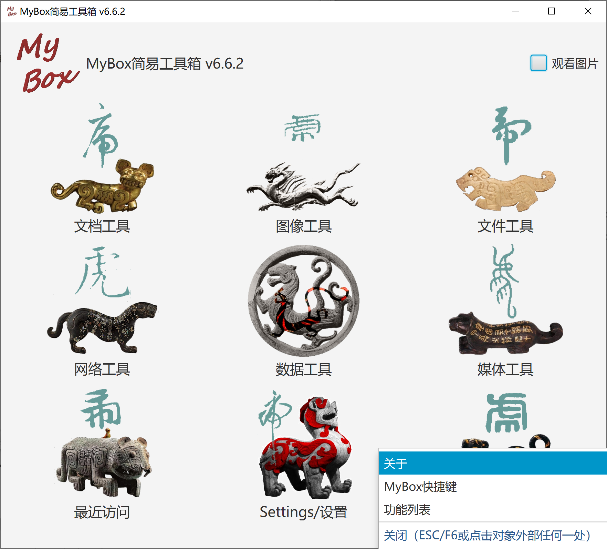
窗口标题显示正在处理的对象名字。
主菜单栏，用于打开各个功能界面。
一些界面包含分页栏，一般显示在底部。
一些界面有鱼形图标，鼠标悬停于上，则弹出提示信息。
一些界面包括左面板或右面板，若有朱雀图标，则可鼠标悬停于上以控制显示/隐藏面板。
对一些按钮、选择框、或图标，鼠标悬停于上可弹出其快捷键或提示信息。
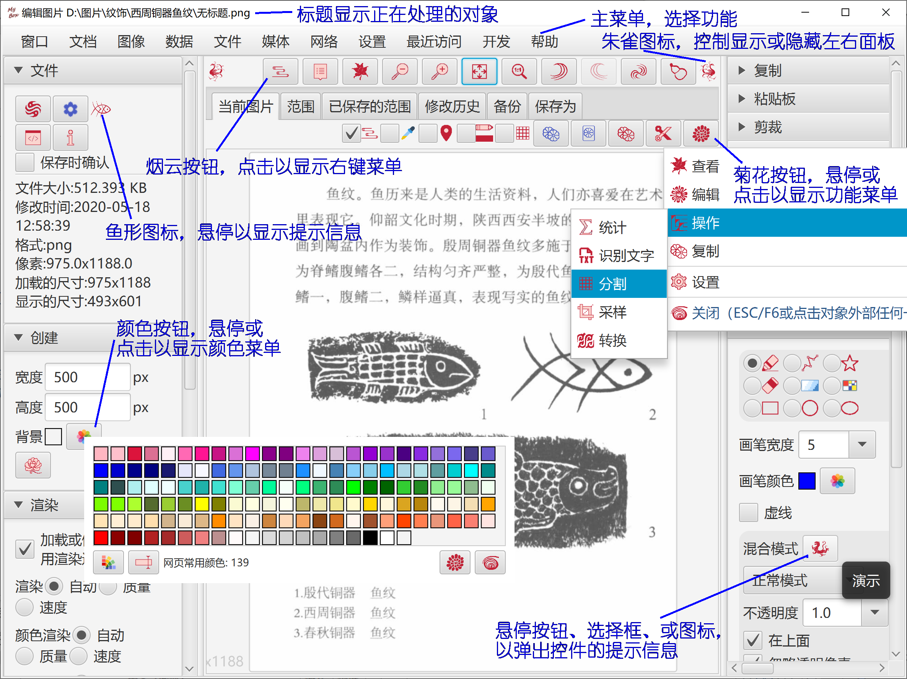
同时按键“CTRL”和“-”，则界面字体减小一号
同时按键“CTRL”和“=”，则界面字体增大一号
在菜单“设置”下可直接选择三种字体大小：12px、15px、17px。
在“设置”窗口中，可选择或设置字体大小。
若要保持当前界面的同时打开其它界面，则不要选择菜单项“设置”-“当打开新工具时关闭当前窗口”。
在“设置”中选择“保存窗口的尺寸和位置”，则每个界面的最后尺寸将被保存、并在下次打开时恢复。
在“设置”中选择了“弹出最近访问的文件/目录”，则每次文件/目录被访问时都被记录，并当鼠标移至选择文件/目录的按钮时弹出选择列表。
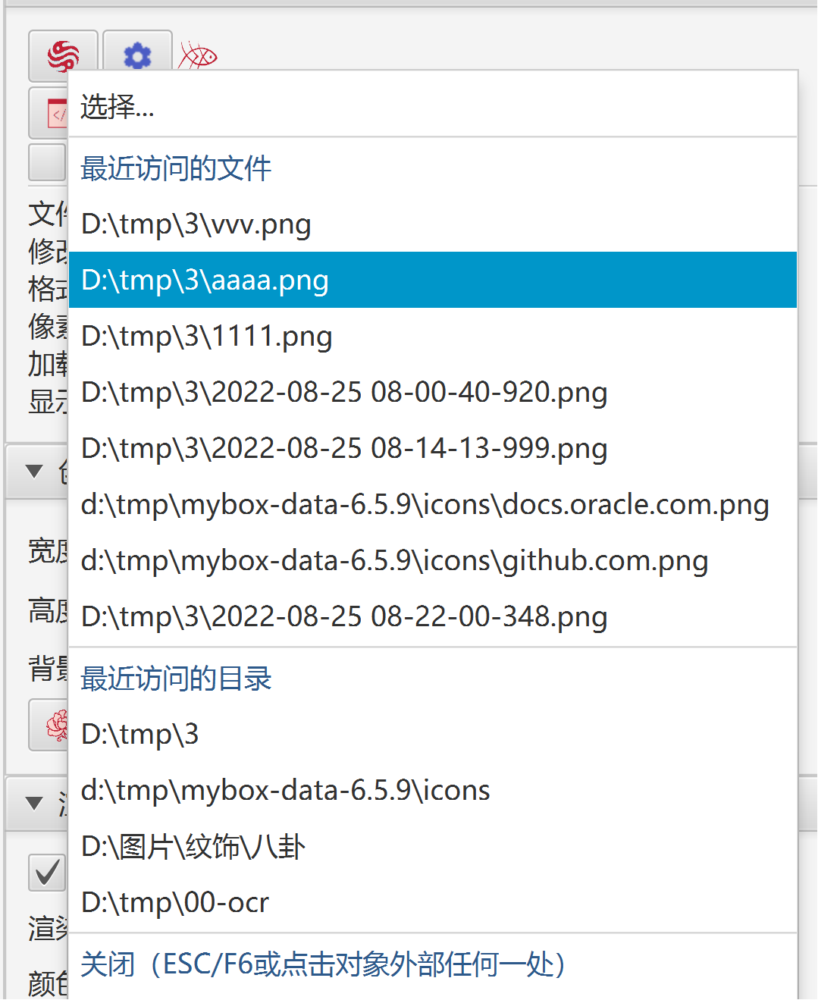
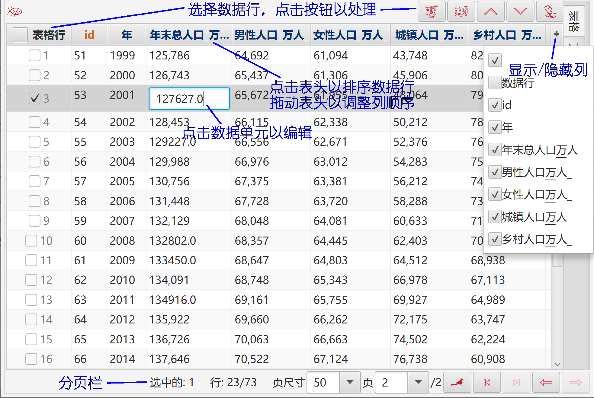
选择数据行：
按住SHIFT键、并点击数据行，以选择多行的范围。
按住CTRL键、并点击数据行，以一行一行地选择多行。
点击行开头的复选框。
编辑数据：
可编辑列的题头文字为蓝色（可编辑的主键仍为红色）。
点击可编辑的单元，则它的输入框会被显示出来。
当可编辑单元失去焦点时，它的值将被检查、非法值将被拒绝。
要显示/隐藏列，点击表格头行右边的按钮"+"。
此操作不影响数据。
要调整列的顺序，点击并拖动列头。
此操作不影响数据。
要对表行进行排序：
点击列头以按此列的升序排序。
再次点击列头以按此列的降序排序。
第三次点击列头以取消此列的排序。
按住SHIFT键并点击更多的列头以按多列排序。
此操作只影响表中当前数据。
主键的题头文字为红色。自增主键的题头文字为橙色。
又称“上下文菜单”，在对象（文本/图像/表格）中点击右键会弹出此菜单。
若界面有“烟云按钮”，点击此按钮也可弹出右键菜单。
若界面有“烟云选择框”：
不选择此框，则右键点击对象时，不弹出右键菜单。
选择此框，则右键点击对象时，弹出右键菜单。
烟云选择框不影响烟云按钮，即点击烟云按钮总是弹出右键菜单。
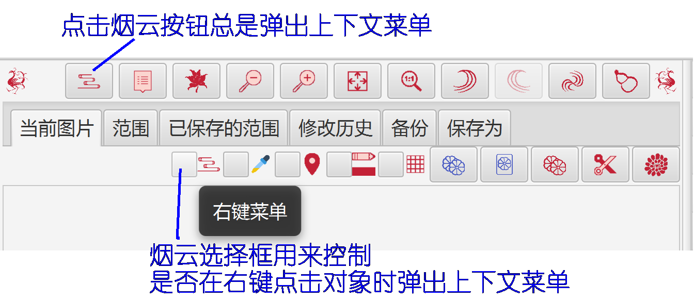
悬停或点击“示例”按钮以弹出示例窗口。
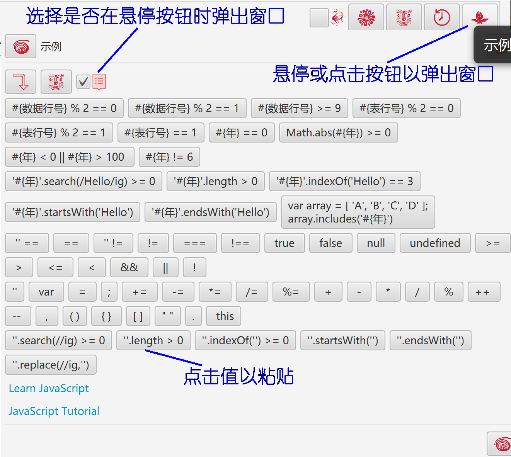
悬停或点击“历史”按钮以弹出示例窗口。
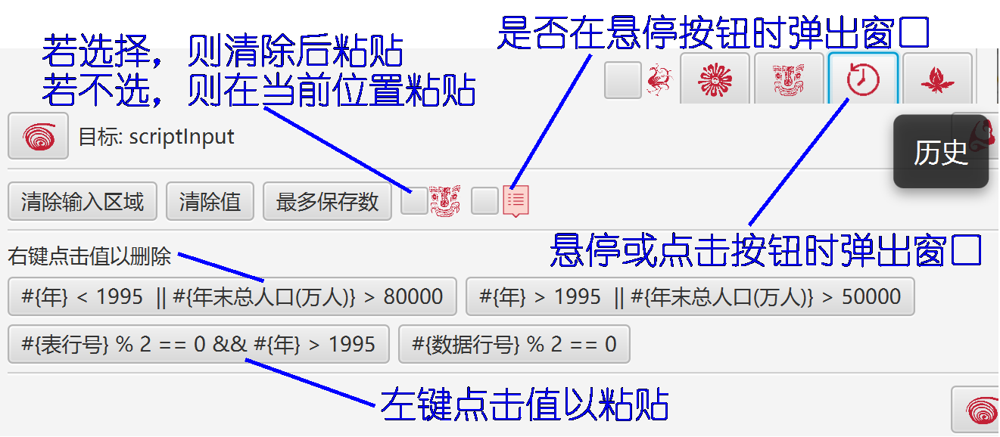
悬停“颜色块”，可弹出颜色的信息。
悬停或点击界面上的“颜色”按钮，可弹出调色板以选择或修改颜色。
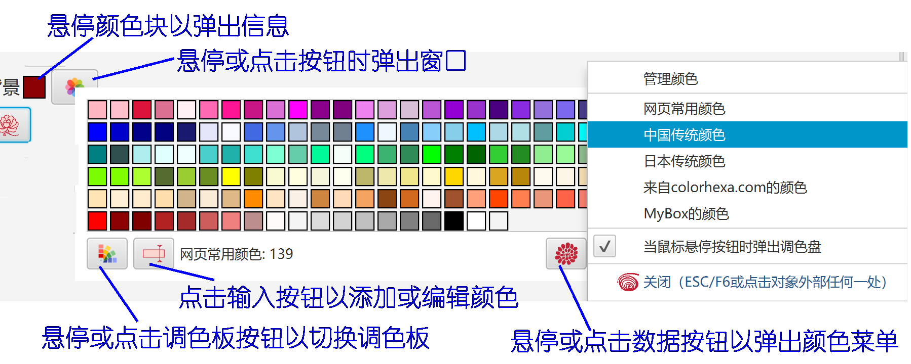
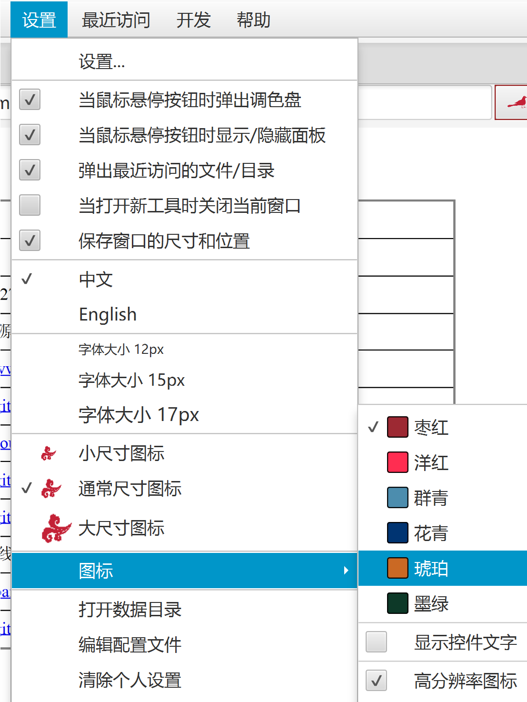
语言、字体大小、图标大小
选择高清晰图标（100x100）还是普通图标（40x40）。 显示器分辨率不高于120dpi时，建议选择普通图标。在非高清晰的显示器上显示高清晰图标反而会模糊。
控件颜色、是否显示控件文字、界面风格
是否恢复界面上次尺寸
是否在新窗口中打开界面
是否在鼠标经过按钮时弹出“设置颜色”
是否在鼠标经过按钮时显示/隐藏面板
界面消息的颜色、时长和字体大小。
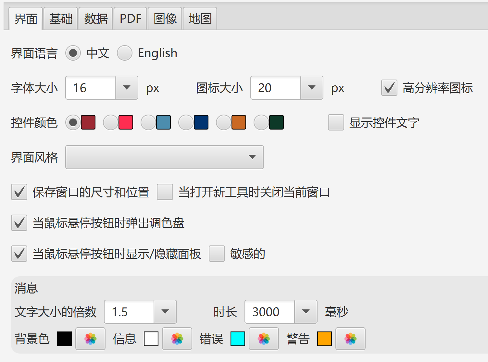
JVM最大可用内存
网络超时
数据目录
Derby运行模式：嵌入模式、网络模式（只允许本地）
是否弹出最近访问的文件/目录、以及弹出个数
退出程序时是否关闭闹钟

PDF可用最大主内存
画笔/锚点的宽度和颜色、锚点是否实心
不支持Alpha时要替换的颜色（建议为白色）
缩略图宽度
渲染参数
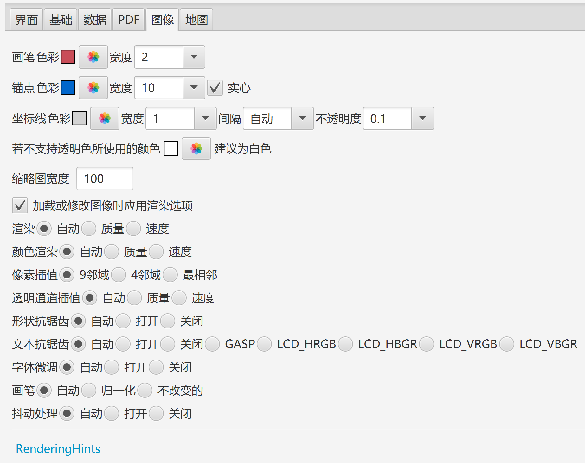
设置数据密钥
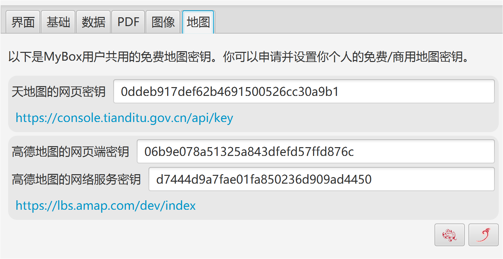
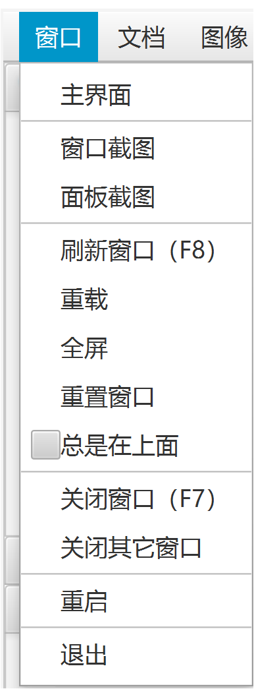
界面上的控件，如按钮、复选框、图片，可能有快捷键：
若焦点在“文本输入”控件中，则以下按键作用于此控件：
Delete/Home/End/PageUp/PageDown/Enter/Ctrl-c/v/z/y/x
否则，快捷键作用于界面。
若焦点不在“文本输入”控件中，组合键的Ctrl/Alt键可省略。
例如，焦点在图片上时，按"c"以复制，按"2"以设置为面板尺寸。
把鼠标移到控件上方，它的工具提示（如果有）会弹出并显示快捷键。
|
功能键 |
操作 |
可能的替换 |
|---|---|---|
|
F1 |
开始 / 确定 / 同步 / 设置 / 查询 |
CTRL+e / ALT+e, CTRL+q / ALT+q |
|
F2 |
保存 |
CTRL+s / ALT+s |
|
F3 |
恢复 / 导出 |
CTRL+r / ALT+r, CTRL+e / ALT+e |
|
F4 |
显示/隐藏左面板 |
|
|
F5 |
显示/隐藏右面板 |
|
|
F6 |
关闭弹出窗口 |
|
|
F7 |
关闭窗口 |
|
|
F8 |
刷新窗口 |
|
|
F10 |
同步 |
|
|
F11 |
保存为 |
CTRL+b / ALT+b |
|
F12 |
菜单 |
|
|
DELETE |
删除 |
CTRL+d / ALT+d |
|
PAGE_UP |
上一个 |
ALT+PAGE_UP |
|
PAGE_DOWN |
下一个 |
ALT+PAGE_DOWN |
|
HOME |
首个 |
ALT+HOME |
|
END |
最后 |
ALT+END |
|
ESCAPE |
取消 / 撤销 |
CTRL+w / ALT+w |
|
CTRL+e |
开始 /确定 / 设置 / 导出 |
F1 / ALT+e |
|
CTRL+c |
复制 |
ALT+c |
|
CTRL+v |
粘贴 |
ALT+v |
|
CTRL+z |
撤销 |
ALT+z |
|
CTRL+y |
重做 |
ALT+y |
|
CTRL+d |
删除 |
DELETE / ALT+d |
|
CTRL+x |
剪裁 |
ALT+x |
|
CTRL+s |
保存 |
F2 / ALT+s |
|
CTRL+b |
保存为 |
F11 / ALT+b |
|
CTRL+f |
查找 |
ALT+f |
|
CTRL+h |
替换 / 复制html |
ALT+h |
|
CTRL+r |
恢复 / 清除 |
ALT+r |
|
CTRL+n |
创建 |
|
|
CTRL+a |
全选 |
ALT+a |
|
CTRL+o |
全不选 |
ALT+o |
|
CTRL+u |
选择 |
ALT+u |
|
CTRL+g |
清除 |
ALT+g |
|
CTRL+w |
取消 / 撤销 / 全部替换 |
ESCAPE |
|
CTRL+p |
弹出 |
ALT+p |
|
CTRL+q |
查询 |
ALT+q |
|
CTRL+k |
取色 |
ALT+k |
|
CTRL+t |
选择区域 / 复制文本 |
ALT+t |
|
CTRL+m |
MyBox粘贴板 |
ALT+m |
|
CTRL+j |
系统粘贴板 |
ALT+j |
|
CTRL+1 |
原尺寸 / 上一个 |
|
|
CTRL+2 |
面板尺寸 / 下一个 |
|
|
CTRL+3 |
放大 |
|
|
CTRL+4 |
缩小 |
|
|
CTRL+- |
减小字体大小 |
|
|
CTRL+= |
增大字体大小 |
|
|
ALT+1 |
设置 / 上一个 |
F1 |
|
ALT+2 |
增加 / 下一个 |
|
|
ALT+3 |
减少 |
|
|
ALT+4 |
过滤 |
|
|
ALT+5 |
反色 |
|
|
ALT+PAGE_UP |
上一个 |
PAGE_UP |
|
ALT+PAGE_DOWN |
下一个 |
PAGE_DOWN |
|
ALT+HOME |
首个 |
HOME |
|
ALT+END |
最后 |
END |
|
s / S |
播放 / 暂停 |
|
|
q / Q |
结束 |
|
|
m / M |
静音 / 声音 |
|
|
f / F |
全屏 |
<文档结束>
第